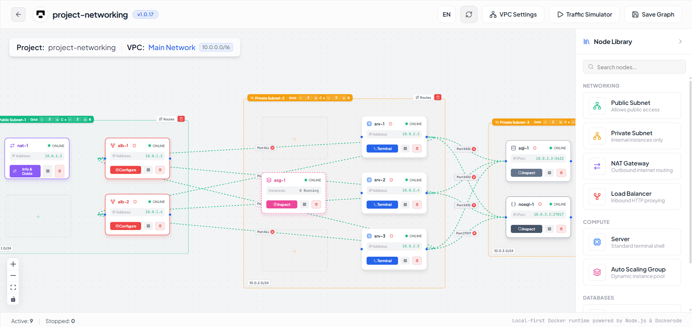

The Packet Tracer of backend engineering.
Torollo is a visual system-design lab. Drag infrastructure onto a canvas — and every node becomes a real Docker container on your machine. Real terminals, real networks, real firewalls. No account, no cloud, no cost.
Requires Node ≥ 18 and Docker running. Nothing is installed permanently.

Not a diagram. A running system.
Built with React Flow, xterm.js & Dockerode
how it works
From empty terminal to running architecture in one command.
1
Run one command
Nothing to clone, nothing to install permanently. Torollo talks directly to your local Docker daemon.
$ npx torollo start2
Drag, drop, wire
Ubuntu servers, PostgreSQL, MongoDB, Redis, VPCs and subnets, load balancers, NAT gateways, security groups, auto scaling groups — wire them together on the canvas.
3
It’s real
Open a root terminal in any container. Run SQL from the built-in explorer. Send pings through the network simulator and watch nginx route the traffic you configured by drawing an edge.
features
Every node is a container. Every wire is a network.
draw.io shows you a picture. Torollo gives you a shell. Everything below ships today, free.
A real Linux container with a full root web terminal (xterm.js) right in your browser.
Each database ships with an interactive Explorer: browse schemas, collections and keys; run SQL, JSON queries or Redis commands from the UI.
Isolated network boundaries backed by real Docker bridge networks — real isolation, not colored boxes.
Visual inbound/outbound rules, enforced as actual iptables rules inside the containers.
Wire nodes to an Nginx load balancer and the upstream nginx.conf is generated for you.
Outbound internet for private subnets using true Linux ip_forward and MASQUERADE routing.
Define a template once, then scale replicas up and down instantly.
Send pings and watch traffic flow through your topology. Save and reload projects locally.
The app UI is available in English and French. Runs anywhere Node ≥ 18 and Docker run — Windows, macOS, Linux.
education
Teach system design on real infrastructure — without the Docker install nightmare.
We’re building an education platform on top of Torollo and looking for a handful of design partners to shape it.
A class of 30 can’t all install Docker
Hosted labs that run in the browser — students click a link and start building.
In development — pilot partnersAn empty canvas terrifies beginners
Guided roadmaps with ordered steps, hints, and a clear goal: “build a resilient 3-tier app”.
In development — pilot partnersSlides can’t tell you if the firewall actually works
Auto-grading validates the real running system state — did the container start, does the app reach the database, is the port actually blocked. No diagram tool or video course can do that.
In development — pilot partnersCisco built NetAcad on Packet Tracer. We’re building the same for backend engineering.
open source
Free forever for individuals. Built in the open.
Torollo is MIT licensed. The community drives new nodes and integrations — come build with us.
Star the repo
Stars are how new people find Torollo. It takes one click and it genuinely helps.
github.com/Derssa/torollo →Contribute a node
Kafka? RabbitMQ? Observability? New nodes follow a documented pattern — one folder, one registry line.
Read the contributing guide →Report an issue
Found a bug, or a node you wish existed? Open an issue — we triage fast.
Open an issue →roadmap
What’s coming next.
None of this is available yet — that’s the point of the waitlist. One email when it ships, nothing else.
Get it first. Join the waitlist.
No spam. One email when Pro launches, one when education pilots open. Joining the waitlist is not a purchase.
faq
Questions, answered straight.
Is Torollo really free?
Yes. Everything that exists today — every node, terminal, explorer and network feature — is free, open source (MIT), and runs locally. Paid plans will only ever cover new cloud services like save/sync and collaboration.
Does it send my data anywhere?
No. Torollo is 100% local: no account, no telemetry backend, no cloud. Your projects are saved on your own machine.
Do I need Docker?
Yes — Torollo orchestrates real containers through your local Docker daemon, which is exactly what makes it more than a diagram tool. Hosted browser-only labs are in development for classrooms.
Is this just another diagram tool?
No. In draw.io a database is a cylinder icon. In Torollo it’s a running PostgreSQL container you can open a shell into, query, firewall, and load-balance.
What platforms does it run on?
Anywhere Node ≥ 18 and Docker run: Windows, macOS, and Linux.
Can I buy Pro today?
Not yet — Pro is in development and the waitlist is exactly that: a list, not a purchase. The Free version is fully usable today.
How do schools and bootcamps get started?
We’re onboarding a small number of design partners for the education platform. Book a pilot and we’ll shape the curriculum, grading and dashboard around your program.